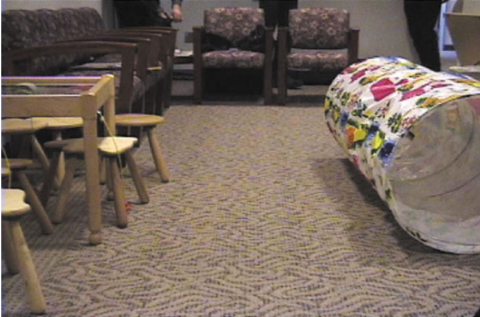
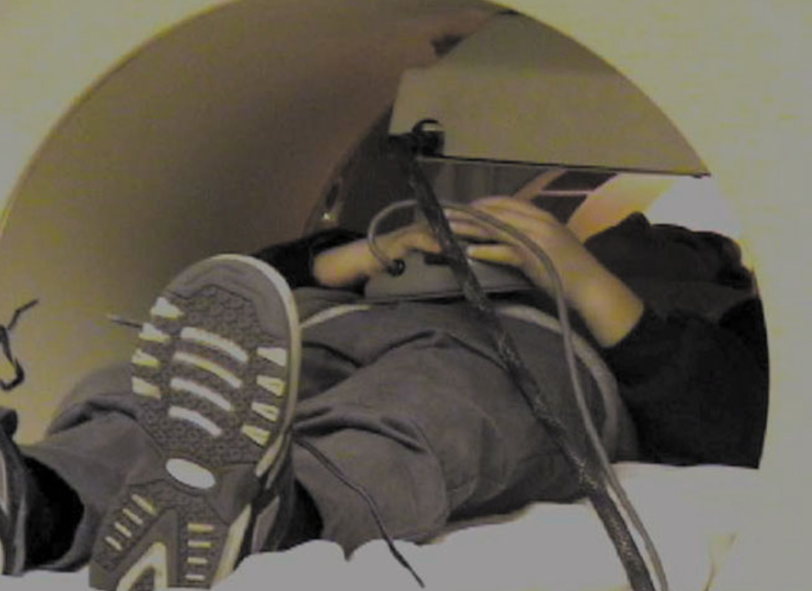
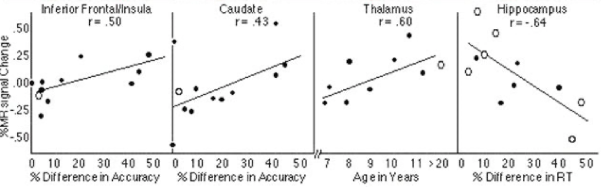

Davidson, M. C., Thomas, K. M., & Casey, B. J. (2003). Imaging the developing brain with fMRI. Mental Retardation and Developmental Disabilities Research Reviews, 9(3), 161–167. https://doi.org/10.1002/mrdd.10076
Figure 1

Simulation
Q. What is the purpose of the presimulator tunnel?
A. TODO

Hardware
Q. What is device the child hoding in his/her hands? What is the purpose of the device?
A. TODO
Figure 2

Perspective
Q. From which perspective are we viewing the brain (i.e., top, bottom, left, right front, or back)?
A. TODO
Spatial Relationships
Q. There are three images of brains. How are they spatially related?
A. TODO
Alternate Universe
Q. The figure higlight the brain regions showing a robust MR signal change for the interaction of group (children, adults) by condition (incompatible, compatible). Suppose in the alternate universe, the authors did not discover any signifiant interaction, what would the figure look like instead?
A. TODO
Variation 1
Suppose we were to plot a figure to instead show only interaction between groups (children vs. adults). Would we see more or fewer highlighted regions? Why?
TODO
Variation 2
Q. Suppose we were to plot a figure to instead show interaction between groups (children vs. adults) by conditions (imcompatible, compatible) and by income level. Would we see more or fewer highlighted regions? Why?
A. TODO
Figure 3

Anatomy
Q. In the first brain image, what is the dark circle at the center bottom?
A. TODO
Spatial Ordering
Q. What is the spatial ordering among the four images (e.g., top-down, left-right...etc)?

Changes
Q. Why were MR signal changes reported as a percentage rather than an absolute term?
A. TODO
Baseline
Q. What were the percentage changes relative to?
A. TODO
Wishful Thinking
Q. Suppose we wish that the correlation can be even stronger for the inferior cortex. What would want the first plot to look different (i.e., the value of r, the patterns of dots)?
A. TODO
Flipped Diretion
Q. The paper reports that "Similar comparisons between accuracy performance and intensity of activation revealed positive correlations in the caudate nucleus and inferior frontal cortex, with more activation in these regions for subjects making a greater number of errors. (last sentence on p. 165)" Support this finding were flipped, how would the figure look differently?
A. TODO